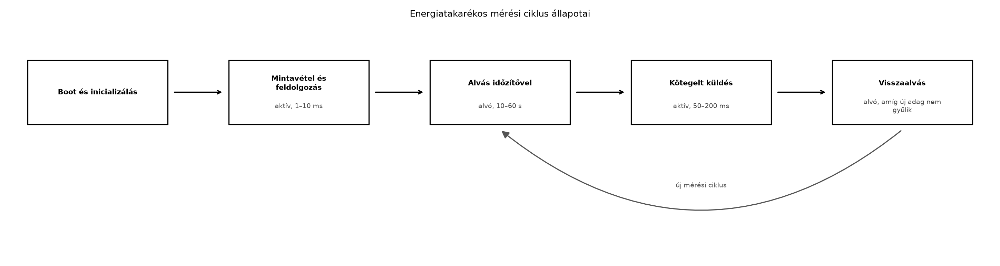

A TerraSense üvegházban az elemes ts-node csomópontnak
akár két évig is működnie kell egyetlen lítium-tionil-klorid (Li-SOCl₂)
elemről. Az Energiamodell és az elemélettartam
kiszámítása alfejezetben felírt átlagáram-egyenlet jól mutatja, hogy
az élettartamot az aktív és alvó üzemmódok aránya határozza meg. Ha a
mérőszál 100 ms-onként felébred, és a rádió minden egyes mintát külön
küld, az átlagáram több mA is lehet; ha viszont a CPU az idő 99,9%-ában
mély alvásban van, a rádió pedig csak ritkán, kötegelve ad, az átlagáram
µA nagyságrendűre csökken. Ebben az alfejezetben a Zephyr
energiagazdálkodási eszközeit és az energiatakarékos szoftvermintákat
alkalmazzuk a ts-node mérési ciklusára.
Definíció. Alvómód (sleep mode): a mikrovezérlő olyan üzemállapota, amelyben a CPU mag órajele leáll vagy lelassul, a perifériák egy része kikapcsol, és a fogyasztás a normál aktív áram töredékére csökken. Mélyebb alvómód nagyobb energiát takarít meg, de hosszabb ébredési időt és kevesebb ébresztési forrást támogat.
Az MCU-k jellemzően több alvómódot kínálnak, amelyek a kikapcsolt
órajelű részekben és az ébredési latenciában térnek el. A Zephyr három,
egymástól különböző PM-réteget használ: a rendszer-PM
(CONFIG_PM) a teljes SoC alvási állapotát választja ki az
idle szálban, a device PM (CONFIG_PM_DEVICE) az egyes
perifériák suspend/resume műveleteit kezeli, a runtime PM
(CONFIG_PM_DEVICE_RUNTIME) pedig a használaton kívüli
eszközöket függeszti fel. A k_sleep() csak blokkolja a
szálat; hogy közben a rendszer milyen mély állapotba kerül, az a board
támogatásától, az engedélyezett ébresztőforrásoktól, a késleltetési
korlátoktól és a PM policy-től függ, nem pedig automatikusan a
legmélyebb állapot. A native_sim szimulátor nem modellezi a
valós fogyasztást, ezért a laborban szimulált energiaszámlálót
használunk.
Egy konkrét, ellenőrizendő példa: a nrf52840dk/nrf52840
boardon a CONFIG_PM=y, CONFIG_PM_DEVICE=y és
CONFIG_PM_DEVICE_RUNTIME=y beállításokkal a kernel idle
állapotban rendszer-PM suspendet hajthat végre, egy szenzor pedig
pm_device_runtime_put() után függeszthető fel, ha a driver
támogatja. Az ébresztés RTC/időzítő vagy GPIO lehet. A tényleges
állapotot, az ébresztési késleltetést és a fogyasztást az adott boardon
kell mérni; a native_sim ezt nem modellezi.
Az energiatakarékos szoftvertervezés legfontosabb szabálya: a CPU-nak
eseményvezérelten kell működnie, és minden várakozást blokkoló hívással
(k_sleep, k_msgq_get, k_sem_take)
kell megvalósítani. A busy wait (k_busy_wait,
for ciklusos várakozás) aktívan tartja a magot, és a teljes
aktív áramot fogyasztja.
Az alábbi folyamatábra a mérési ciklus energiaállapotait mutatja:

Az ébresztési források a következők lehetnek:
A Zephyr tickless kernel üzemmódjában a kernel nem
ébred fel periodikus rendszer-tickre, csak akkor, amikor tényleges
esemény (időzítő lejárata, megszakítás) történik. Ez csökkenti a
felesleges ébredések számát, és hosszabb alvási periódusokat tesz
lehetővé. A tickless üzemmód nem önmagában pontosságvesztési funkció: a
k_uptime_get() és az időzítők felbontása a hardver
timerétől és a kernel konfigurációjától függ, a gyakorlati kompromisszum
pedig inkább a hosszabb ébredési latency és a timer-újraprogramozás
költsége. A CONFIG_TICKLESS_KERNEL=y beállítás a legtöbb
Zephyr-támogatású MCU-n elérhető, de a pontos viselkedés
architektúrafüggő, ezért ellenőrizni kell a használt verzió
dokumentációjában.
A rádióidő minimalizálása legalább olyan fontos, mint a CPU alvása.
Egy BLE- vagy LoRa-adás jellemzően 10–100 mA-t fogyaszt, ami
nagyságrendekkel több, mint a mély alvó mód. Ezért a
ts-node nem minden minta után küld, hanem kötegelt
küldést alkalmaz: 5 mérést összegyűjt, és egyetlen adásban
továbbítja. Ez a stratégia csökkenti a rádió bekapcsolási idejét, a
protokoll overheadet és a nyugták számát is. Hasonló elvet használ majd
az Adatformátumok: JSON, CBOR, Protocol Buffers,
SenML alfejezet, amikor a tömbös telemetria-sémát véglegesíti,
valamint a Store-and-forward: offline működés és
visszatöltés alfejezet, ahol a gateway is kötegelve tölti vissza az
offline adatokat.
A perifériák kikapcsolása szintén kritikus. A Zephyr
eszközmodelljében minden bekapcsolt periféria (szenzor, UART, SPI, GPIO)
fogyaszt. A sensor_sample_fetch() után a szenzor device
PM-en keresztül függeszthető fel: ha a driver és a board támogatja, a
runtime PM pm_device_runtime_put() hívással kapcsolja ki,
illetve pm_device_action_run() adhat ki suspend kérést. A
sensor_attr_set() nem általános szenzoralvó API, hanem
driver-specifikus attribútumot állít; csak akkor használható erre, ha az
adott driver dokumentálja. A nem használt GPIO-kat az MCU adatlapja
szerint kell beállítani: analóg módba a bemeneti puffer tiltásával, vagy
definiált fel-/lehúzású digitális bemenetbe, vagy rögzített kimeneti
szintre. A lebegő digitális bemenet zajérzékeny, és a bemeneti puffer
átbillenése miatt növelheti a fogyasztást, ezért önmagában nem jó
energiatakarékos megoldás; a külső áramkört és a szivárgási utakat is
figyelembe kell venni.
Az alvómód kiválasztásánál a következő kompromisszumokat kell mérlegelni:
| Szempont | Idle / tickless | Sleep | Deep sleep / Standby |
|---|---|---|---|
| Ébredési idő | azonnali | µs nagyságrend | ms nagyságrend |
| Fogyasztás | 100 µA–1 mA | 10–100 µA | 0,1–10 µA |
| Megőrzött állapot | minden | CPU regiszterek, RAM | korlátozott vagy nincs |
| Ébresztési források | minden | időzítő, GPIO, RTC | RTC, külső megszakítás |
| Zephyr-ben | k_sleep + tickless |
CONFIG_PM + CONFIG_PM_DEVICE |
CONFIG_PM + board-specifikus mély állapot |
A ts-node esetében a mérési ciklus 10 másodperces
periódusával a deep sleep a megfelelő választás, mert
az ébredési latencia (néhány ms) elhanyagolható a periódushoz képest, a
fogyasztáscsökkenés viszont jelentős. Ha a csomópontnak valós időben
kell reagálnia egy szelepvezérlő parancsra, akkor a rádió ébresztését is
engedélyezni kell, ami a BLE esetén a kapcsolat fenntartását vagy
hirdetési intervallumot jelent – ez növeli az alapfogyasztást, ezért
ilyenkor az alvó mód sekélyebb lesz.
ts-node ciklusának átalakítása szimulált
energiaszámlálóvalMunkakönyvtár:
mkdir -p ~/iot-labor/i017 && cd ~/iot-labor/i017A labor a Szálak és ütemezés alfejezetben
létrehozott ts-node projektet alakítja át. Másoljuk át a
korábbi forrást:
cp -r ../i010/ts-node ./ts-node
cd ts-nodeA src/main.c fájlt cseréljük le az alábbi tartalomra. A
kód két szálat használ: a measure_thread_fn 10
másodpercenként mintát vesz, a send_thread_fn 5 minta
összegyűjtése után egy kötegelt küldést szimulál. A 60 másodperces
ablakban így 6 minta készül, amelyből éppen egy teljes 5 mintás adag
küldődik el. A szimulált energiaszámláló a CPU-aktív, a rádió-aktív és
az alvó időt külön komponensként gyűjti, majd a program 60 másodperc
után kiírja a becsült átlagáramot.
#include <zephyr/kernel.h>
#include <zephyr/random/random.h>
#include <zephyr/sys/atomic.h>
#include <stdio.h>
#include <string.h>
#define MEASURE_INTERVAL_MS 10000U
#define BATCH_SIZE 5U
#define CPU_ACTIVE_CURRENT_MA 10.0f
#define RADIO_CURRENT_MA 120.0f
#define SLEEP_CURRENT_UA 10.0f
#define MEASURE_ACTIVE_MS 2U
#define SEND_ACTIVE_MS 120U
#define MEASURE_STACK_SIZE 1024
#define SEND_STACK_SIZE 1024
static atomic_t cpu_active_ms;
static atomic_t radio_active_ms;
static atomic_t g_batch_dropped;
struct telemetry_data {
uint32_t seq;
float temperature_c;
float humidity_rh;
};
static struct telemetry_data g_batch[BATCH_SIZE];
static uint8_t g_batch_count;
static struct k_mutex g_batch_mutex;
static struct k_sem g_batch_sem;
K_THREAD_STACK_DEFINE(measure_stack, MEASURE_STACK_SIZE);
K_THREAD_STACK_DEFINE(send_stack, SEND_STACK_SIZE);
static struct k_thread measure_thread_data;
static struct k_thread send_thread_data;
static void measure_thread_fn(void *p1, void *p2, void *p3);
static void send_thread_fn(void *p1, void *p2, void *p3);
static void add_cpu_active(uint32_t duration_ms)
{
atomic_add(&cpu_active_ms, duration_ms);
}
static void add_radio_active(uint32_t duration_ms)
{
atomic_add(&radio_active_ms, duration_ms);
}
static void simulate_measurement(struct telemetry_data *out, uint32_t seq)
{
/* Szimulált szenzorolvasás: 2 ms CPU-aktív idő */
k_busy_wait(MEASURE_ACTIVE_MS * 1000U);
out->seq = seq;
out->temperature_c = 20.0f + (sys_rand32_get() % 1000) / 100.0f;
out->humidity_rh = 50.0f + (sys_rand32_get() % 2000) / 100.0f;
add_cpu_active(MEASURE_ACTIVE_MS);
}
static void simulate_send_batch(const struct telemetry_data *batch,
uint8_t count)
{
/* Szimulált rádióadás: 120 ms CPU- és rádió-aktív idő */
k_busy_wait(SEND_ACTIVE_MS * 1000U);
add_cpu_active(SEND_ACTIVE_MS);
add_radio_active(SEND_ACTIVE_MS);
printf("[send] %u minta elküldve, seq=%u..%u\n",
count, batch[0].seq, batch[count - 1].seq);
}
static void measure_thread_fn(void *p1, void *p2, void *p3)
{
uint32_t seq = 0;
ARG_UNUSED(p1);
ARG_UNUSED(p2);
ARG_UNUSED(p3);
while (1) {
struct telemetry_data sample;
simulate_measurement(&sample, ++seq);
k_mutex_lock(&g_batch_mutex, K_FOREVER);
if (g_batch_count < BATCH_SIZE) {
g_batch[g_batch_count++] = sample;
if (g_batch_count == BATCH_SIZE) {
k_sem_give(&g_batch_sem);
}
} else {
/* Definált túlcsordulási politika: a minta eldobása. */
atomic_inc(&g_batch_dropped);
}
k_mutex_unlock(&g_batch_mutex);
k_sleep(K_MSEC(MEASURE_INTERVAL_MS));
}
}
static void send_thread_fn(void *p1, void *p2, void *p3)
{
struct telemetry_data local[BATCH_SIZE];
ARG_UNUSED(p1);
ARG_UNUSED(p2);
ARG_UNUSED(p3);
while (1) {
uint8_t count;
k_sem_take(&g_batch_sem, K_FOREVER);
/* A közös puffert csak a másolás idejére zárjuk. */
k_mutex_lock(&g_batch_mutex, K_FOREVER);
count = g_batch_count;
memcpy(local, g_batch, count * sizeof(local[0]));
g_batch_count = 0;
k_mutex_unlock(&g_batch_mutex);
if (count > 0) {
simulate_send_batch(local, count);
}
}
}
int main(void)
{
uint32_t start_ms;
k_mutex_init(&g_batch_mutex);
k_sem_init(&g_batch_sem, 0, 1);
start_ms = k_uptime_get_32();
k_thread_create(&measure_thread_data, measure_stack,
K_THREAD_STACK_SIZEOF(measure_stack),
measure_thread_fn, NULL, NULL, NULL,
K_PRIO_PREEMPT(5), 0, K_NO_WAIT);
k_thread_create(&send_thread_data, send_stack,
K_THREAD_STACK_SIZEOF(send_stack),
send_thread_fn, NULL, NULL, NULL,
K_PRIO_PREEMPT(4), 0, K_NO_WAIT);
k_sleep(K_SECONDS(60));
uint32_t elapsed_ms = k_uptime_get_32() - start_ms;
uint32_t cpu_ms = (uint32_t)atomic_get(&cpu_active_ms);
uint32_t radio_ms = (uint32_t)atomic_get(&radio_active_ms);
uint32_t sleep_ms = elapsed_ms > cpu_ms ? elapsed_ms - cpu_ms : 0;
if (elapsed_ms == 0) {
elapsed_ms = 1;
}
float avg_current_ma =
(cpu_ms * CPU_ACTIVE_CURRENT_MA +
radio_ms * RADIO_CURRENT_MA +
sleep_ms * (SLEEP_CURRENT_UA / 1000.0f)) / elapsed_ms;
printf("\n--- Szimulált energiaszámláló ---\n");
printf("Aktív CPU idő: %u ms\n", cpu_ms);
printf("Rádió aktív idő: %u ms\n", radio_ms);
printf("Alvó idő: %u ms\n", sleep_ms);
printf("Duty cycle (CPU): %.2f %%\n", 100.0f * cpu_ms / elapsed_ms);
printf("Átlagáram: %.3f mA\n", avg_current_ma);
printf("Becsült élettartam 2400 mAh-s elemmel: %.1f nap\n",
2400.0f / avg_current_ma / 24.0f);
printf("Eldobott minták: %u\n", (uint32_t)atomic_get(&g_batch_dropped));
return 0;
}A measure_thread_fn az írás előtt ellenőrzi a
g_batch_count < BATCH_SIZE feltételt; ha a fogyasztó
lassabb, a minta eldobódik, és a g_batch_dropped atomi
számláló nő, a tömb nem csordul túl. A send_thread_fn a
mutex alatt csak lemásolja az adagot, majd elengedi a mutexet, és a 120
ms-os adást már a közös puffer zárása nélkül végzi, így a mérőszál nem
blokkolódik a teljes adás idejére.
Az energiaszámláló nem szálankénti alvásidőket ad össze, mert a
szálak alvása és aktivitása átfedhet: a send_thread_fn
akkor is aktív lehet, amikor a measure_thread_fn éppen
alszik. A modell ezért rendszerszintű, egymást kizáró időfelosztást
használ: a cpu_active_ms a tényleges CPU-aktív szakaszok
(mérés és adás) összege, a radio_active_ms a rádió adási
ideje, az alvó idő pedig az eltelt teljes időből a CPU-aktív idő
levonásával adódik. A rádió adása alatt a CPU is aktív, ezért a két áram
összeadódik (10 mA + 120 mA), de az idő nem számolódik kétszer. A
k_uptime_get_32()-vel mért elapsed_ms
biztosítja, hogy az ablak hossza a tényleges eltelt idő legyen, a záró,
még be nem könyvelt alvásrészt is beleértve. Az atomi számlálók
(atomic_t) elkerülik a versenyhelyzetet a két szál és a
main között.
A prj.conf tartalmát egészítsük ki a tickless kernel
engedélyezésével:
CONFIG_TICKLESS_KERNEL=y
CONFIG_PM=y
CONFIG_ENTROPY_GENERATOR=yA Zephyr native_sim boardon a CONFIG_PM és
a CONFIG_TICKLESS_KERNEL pontos hatása verziófüggő; a fenti
beállítások ellenőrzési igénnyel szerepelnek, de a szimulált
energiaszámláló ettől függetlenül működik.
Fordítás és futtatás:
west build -b native_sim
./build/zephyr/zephyr.exeVárt kimenet a tervezett ütemezés szerint (a szimulátor időzítése néhány ms eltérést okozhat):
[send] 5 minta elküldve, seq=1..5
--- Szimulált energiaszámláló ---
Aktív CPU idő: 132 ms
Rádió aktív idő: 120 ms
Alvó idő: 59868 ms
Duty cycle (CPU): 0.22 %
Átlagáram: 0.272 mA
Becsült élettartam 2400 mAh-s elemmel: 367.7 nap
Eldobott minták: 0A 60 másodperc alatt a mérőszál 6 mintát vesz (t = 0, 10, …, 50 s), ezért éppen egy teljes 5 mintás adag küldődik el; a 6. minta a következő ablakban kerül sorra. Az átlagáram 0,272 mA, amit a 120 mA-es rádiócsúcs 120 ms-os részaránya és a 10 mA-es CPU-aktív idő együttesen ad. Ez nem „tized mA alatti” érték: a korábbi 0,136 mA-es szám a rádióáram elhagyásából és a hibás időszámításból származott. Ha a szenzort minden másodpercben olvasnánk, a CPU-aktív idő és ezzel a duty cycle nőne, miközben a rádióadás kötegelt maradhat.
Takarítás:
cd ~/iot-labor
rm -rf i017A labor működésének ellenőrzése:
west build hiba nélkül lefut, és a
zephyr.exe elindul.send sor a 40. másodperc körül jelenik meg (5 minta ×
10 s), a 60 másodperces ablakban egyszer.k_sem_give és k_sem_take párosítás
helyes; a minta csak akkor íródik a tömbbe, ha van hely, különben az
Eldobott minták számláló nő.send_thread_fn-t szándékosan késleltetjük, a
g_batch tömb nem csordul túl: a
g_batch_count < BATCH_SIZE ellenőrzés miatt a felesleges
minták eldobódnak.| Hibatünet | Ok | Javítás |
|---|---|---|
| A program azonnal kilép, nincs kimenet | A main nem vár eleget |
Növeljük a k_sleep(K_SECONDS(60)) értékét |
A send sorok sűrűbben jelennek meg |
A MEASURE_INTERVAL_MS túl kicsi |
Állítsuk 10000-re |
| Az átlagáram nagyobb a vártnál | A SLEEP_CURRENT_UA beépítése hibás |
Ellenőrizzük az átváltást:
SLEEP_CURRENT_UA / 1000.0f |
| A szálak nem indulnak el | A veremméret vagy a prioritás hibás | Növeljük a veremméretet 2048 bájtra, és ellenőrizzük a
k_thread_create paramétereit |
k_busy_wait() a processzort aktívan dolgoztatja, ezért a
teljes aktív áramot fogyasztja. Csak nagyon rövid, hardver-időzítésű
késleltetésekhez használjuk; minden más esetben
k_sleep().ts-node minden mérés után azonnal PUBLISH-t küld, a rádió
fogyasztása dominál, és az elem hetek alatt lemerül. A kötegelt küldés
5–10 mintát gyűjt, és egy adásban továbbítja, így a rádióidő töredékére
csökken.pm_device_runtime_put()), a driver támogatja a suspend
műveletet, és a board PM-konfigurációja engedélyezi azt. A
sensor_attr_set() nem általános alvó API, ezért
driverenként ellenőrizni kell, milyen attribútumok érhetők el.ts-node mérési
ciklusa 10 s alvásból és 2 ms aktív időből áll. A rádió 120 ms-ig aktív,
de csak minden 8. minta után kapcsol be. Számítsd ki az átlagáramot, ha
a CPU aktív árama 8 mA, az alvó áram 5 µA, és a rádió adása alatt a
rádióáram a CPU-áramhoz adódik (120 mA). Mennyi a becsült élettartam
2400 mAh-s elemmel? Ha az adatlap a TX alatti teljes rendszeráramot adja
meg, hogyan változik a számítás?main.c-jét úgy, hogy a send_thread_fn ne csak
akkor küldjön, ha 5 minta összegyűlt, hanem legkésőbb 30 másodperc után
is, még akkor is, ha csak 3 minta van. Ezzel elkerüljük, hogy ritka
mintavétel esetén az adat sokáig az eszközön maradjon.k_sem_take(&g_batch_sem, K_FOREVER) blokkoló hívás a
send_thread_fn-ben. Mi történik, ha a
measure_thread_fn leáll (például egy szenzorhiba miatt)?
Hogyan lehetne ezt watchdoggal vagy időkorláttal kezelni?A tick-alapú kernel periodikusan (pl. 10 ms-onként) megszakítja a
processzort, még akkor is, ha nincs tennivaló. Ez meggátolja a hosszú,
egybefüggő alvást. A tickless kernel csak a következő időzítő lejártakor
ébreszti fel a CPU-t, így a 10 másodperces mérési periódus alatt
kevesebb ébredés történik. A kompromisszum nem önmagában
pontosságvesztés: az időzítők felbontása a hardver timerétől és a kernel
konfigurációjától függ, a gyakorlati költség pedig a hosszabb ébredési
latency és a timer újraprogramozása lehet. A k_uptime_get()
felbontását az adott boardon kell ellenőrizni.
Egy 8 mintás ciklusban a mérési periódusok 8 × 10 s = 80 000 ms alvást adnak. A CPU a 8 mérés során 8 × 2 ms = 16 ms-ig aktív, ehhez jön a 120 ms-os rádióadás, amely alatt a CPU szintén aktív: összesen 136 ms. A rádióáram a CPU-áramhoz adódik, ezért adás közben a rendszeráram 8 + 120 = 128 mA; ha az adatlap a TX alatti teljes rendszeráramot adja meg, a CPU-áramot nem kell még egyszer hozzáadni.
Az összidő 80 000 + 136 = 80 136 ms, ezért:
Az élettartam: óra, azaz körülbelül 505 nap. Ha a 120 mA már a teljes TX alatti rendszeráram, akkor a CPU 120 ms-os járuléka nem adódik hozzá, és az átlagáram ennél valamivel alacsonyabb.
A send_thread_fn módosítása: használjunk
k_sem_take helyett k_poll-t vagy egy időzítőt,
amely 30 másodperc után is jelez. Egyszerűbb megoldás: a
send_thread_fn ciklusában
k_sem_take(&g_batch_sem, K_SECONDS(30)), majd ha a
visszatérési érték -EAGAIN, akkor a jelenlegi
g_batch_count értékkel is küldünk, ha az nagyobb
nullánál.
Ha a measure_thread_fn leáll, a
g_batch_sem soha nem kap jelet, így a
send_thread_fn örökre blokkol. A megoldás: a
k_sem_take időkorláttal történő hívása
(K_MSEC(30000)), és a visszatérési érték vizsgálata. Ha
időtúllépés történt, akkor is küldjük el a rendelkezésre álló mintákat,
és esetleg növeljünk egy hibaszámlálót. A watchdog pedig újraindíthatja
a teljes rendszert, ha a mérőszál hosszabb ideig nem ad
életjelet.
Az elemes IoT-csomópont élettartamát az alvó és aktív idő aránya
határozza meg. A CPU-t eseményvezérelten, blokkoló hívásokkal kell
várakoztatni, és a board által támogatott, a késleltetési igényeknek
megfelelő alvómódba kell küldeni; a CONFIG_PM önmagában nem
garantálja a legmélyebb állapotot. A Zephyr rendszer-, device- és
runtime PM rétegei, valamint a tickless kernel beállításai csökkentik a
felesleges ébredéseket, de a pontos hatás board- és verziófüggő. A
rádióidő minimalizálása érdekében a ts-node
kötegelt küldést alkalmaz: 5 mérést gyűjt, és egyetlen
adásban továbbítja. Ezt a stratégiát a labor
~/iot-labor/i017/ts-node/src/main.c fájlja valósítja meg a
g_batch tömbbel, a g_batch_count számlálóval
és a g_batch_sem szemaforral. A szimulált energiaszámláló a
CPU-aktív, rádió-aktív és alvó időt komponensenként, egyetlen idővonalon
számolja, és kiírja a duty cycle-t és a becsült élettartamot.
Továbbvitt eredmény. A kötegelt küldés és az 5 mintás
adagolás konvencióját használja az Adatformátumok:
JSON, CBOR, Protocol Buffers, SenML alfejezet a tömbös
telemetria-séma kialakításához, valamint a Store-and-forward: offline működés és visszatöltés
alfejezet, amikor a gateway is kötegelve tölti vissza az offline
adatokat.
CONFIG_TICKLESS_KERNEL, CONFIG_PM pontos
neve és hatása a használt Zephyr verzióban ellenőrizendő. A
native_sim board PM-támogatása korlátozott lehet.k_uptime_get_32() és a k_sleep
viselkedése tickless módban a Zephyr verziójától függően változhat.